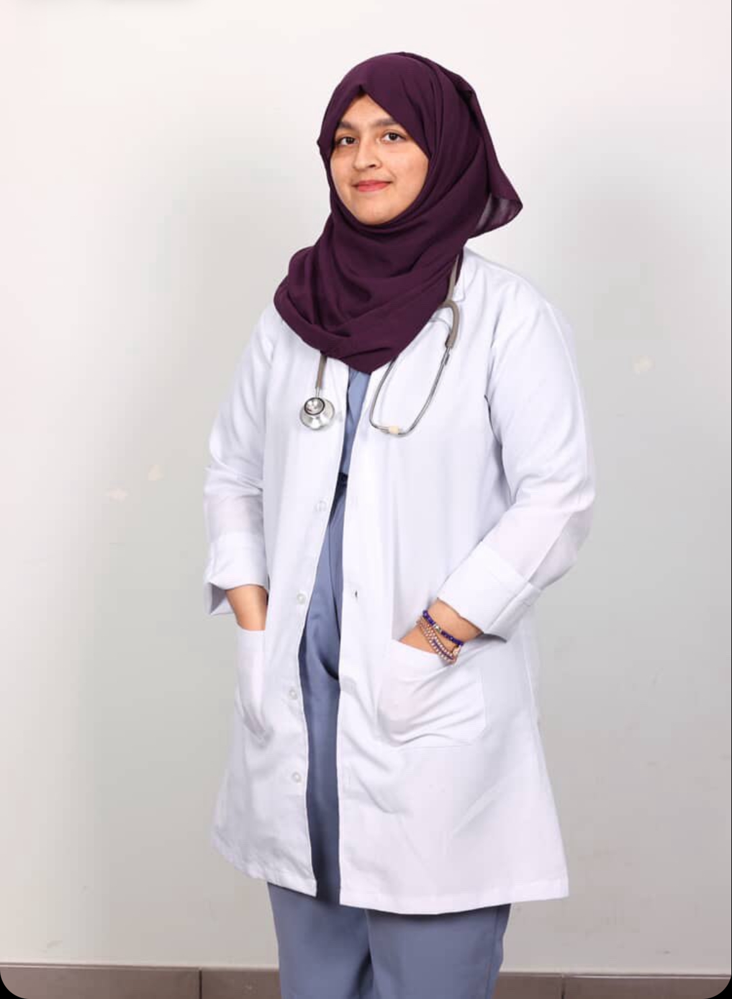

Zainab Usman
Mecca Province, Saudi Arabia Chapter President
Hello everyone! I’m Zainab Usman, a first-year MBBS student passionate about advancing health and wellness through both science and compassion. I’m especially inspired by the fields of dermatology and neuro wellness, where care goes beyond treatment — it restores confidence, dignity, and quality of life.
Through Hearts for Healing – Middle East Chapter, my mission is to create awareness, spark conversations, and build initiatives that empower individuals to take charge of their physical, mental, and emotional well-being. I envision a community where healing is holistic and accessible to all.